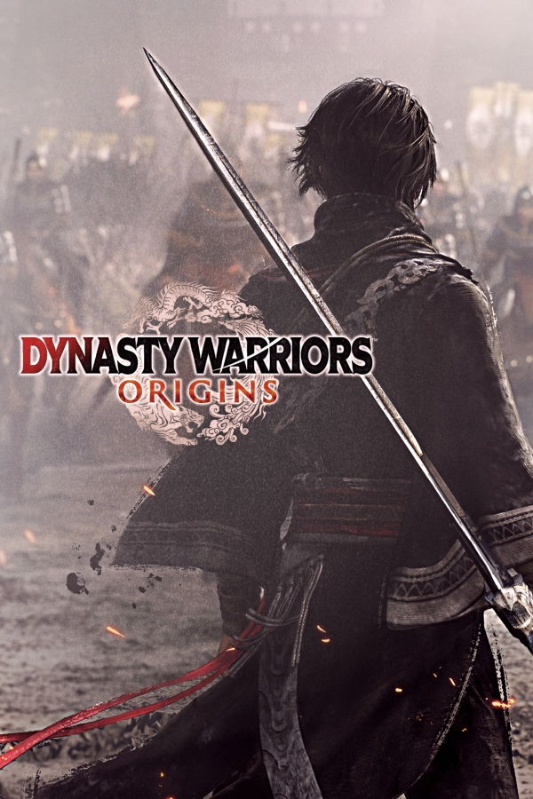

Dynasty Warriors: Origins
Every archived year-end list appearance, including placement and points earned.
About the Game
Early purchase bonus- Early Works Soundtrack Collection (Digital Edition) ©KOEI TECMO GAMES CO., LTD. All rights reserved. 2004-2005 Composed by Toru Hasebe A soundtrack featuring a total of 191 original music tracks from the series, including background music from titles spanning from "DYNASTY WARRIORS 2" to "DYNASTY WARRIORS 5 Empires," as well Omega Force's first title, "DYNASTY WARRIORS." The soundtrack can be played by accessing the main menu, Special Content, and then Music, and selecting "Early Works Soundtrack Collection."Note: - The early purchase bonus will be available for those who pre-order or who purchase the game by January 30, 2025. - The soundtrack includes content that is also available for purchase on music streaming sites. Please be aware that the bonus may become available for purchase or for free as add-on content for this title at a later date. "Digital Deluxe Edition" Contents"DYNASTY WARRIORS: ORIGINS Digital Deluxe Edition" consists of the main game and the contents listed below. - Official Book & Original Soundtrack (Digital Edition) The Official Book & Original Soundtrack can be accessed in game. The Official Book is full of original illustrations of major events in the Three Kingdoms period, along with never-before-seen information about characters and charts depicting their relationships to one another, all centered around the grand story of the new "DYNASTY WARRIORS," told from the perspective of a single protagonist. The Original Soundtrack includes the 20 original tracks that have been arranged for this title. - Letters Letters provide gold for buying things like weapons and portable items, and pyroxene for creating gems. When you select "New Game" and play through the story, letters will be delivered to you at Inns. The letter that provide pyroxene will only be delivered after you reach the point in the game where it becomes possible to create gems. Note: - The main game "DYNASTY WARRIORS: ORIGINS" is also being sold as a Standard Version. Please confirm that you have selected the correct product before making your purchase. - The Official Book & Original Soundtrack are the digital versions of the Official Book (Japanese version) & Original Soundtrack included in the "TREASURE BOX" sold in some regions. - These contents cannot be downloaded as separate files (PDF, MP3, etc.). - None of these contents can be viewed or played outside of the game. - Please be aware that bonuses and other contents may become available for purchase or for free as add-on content for this title at a later date. DYNASTY WARRIORS: ORIGINS DemoIn this demo version of "DYNASTY WARRIORS: ORIGINS" you can experience a new side of the "Battle of Sishui Gate" with battles against large forces and powerful enemies like Lu Bu on exhilarating battlefields. Enjoy the most evolved form of combat in battles of 1 vs. 1,000. Note: - The difficulty level and other settings can be adjusted. - Some elements of the demo version may differ from the final game. - Please see the official site for details. About the GameBecome immersed in exhilarating battles as a nameless hero in the Three Kingdoms.・ The most exhilarating action in the series' historyTension-filled battlefields where you clash against massive armies stretching as far as the eye can see. How will you handle the onslaught of enemies? Your military prowess will serve you well as you fight in tandem with your allies in tactical battles unique to the "DYNASTY WARRIORS" franchise and experience the most exhilarating action in the series' history. ・ A new version of the Three Kingdoms from the perspective of an original protagonistThe story of the Three Kingdoms is set in the vast mainland of China where the convictions of different heroes intersect. Experience this magnificent and alluring world through the eyes of the original protagonist, a "nameless hero." ・ Features supported in the PC version - All gamepad types - Customization for mouse/keyboard - 4K ultra-HD resolution* - Ultra-wide monitors* - All upscaling types* - HDR and high refresh rate monitors* *Dependent on the hardware environment Note: Images are taken from an in-development build. The final product may differ from the footage shown. Note: The product "DYNASTY WARRIORS: ORIGINS Digital Deluxe Edition" is also being sold. Please confirm that you have selected the correct product before making your purchase.
| Released | 2025-01-16 |
|---|---|
| Developer | KOEI TECMO GAMES CO |
| Publisher | Koei Tecmo Games |
| Genres | Action, RPG, Strategy |
| Platforms | PlayStation 5, PC |
SingleplayerSteam AchievementsFull controller supportSteam CloudRPGStory RichThird PersonAction RPGControllerTacticalHack and SlashWar
Where to Buy
Game information provided by RAWG.
Points by Year
List History
| Year | Source | List | Placement | Points |
|---|---|---|---|---|
| 2025 | Geeky Brummie | Top 50 Most Notable Games of 2025 | 43 | 1 |
| 2025 | Inverse | The 25 Best Games Of 2025, Ranked | 25 | 3 |
| 2025 | NPR | The best games of 2025, picked by NPR's staff | Unranked | 1 |